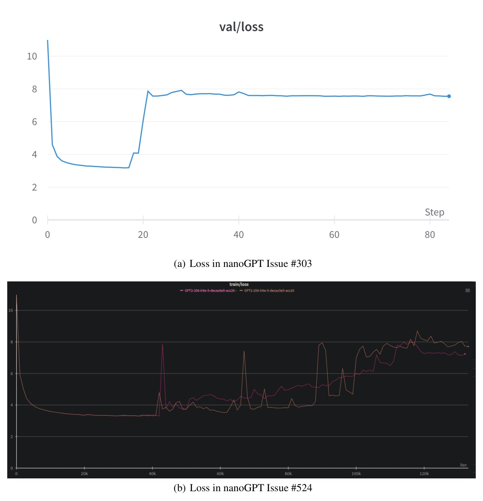
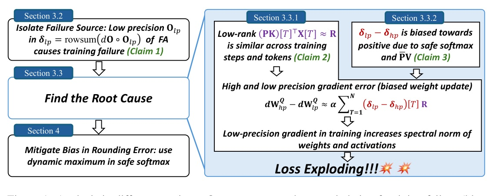
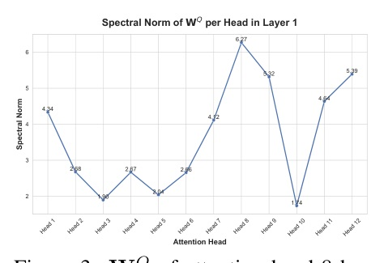
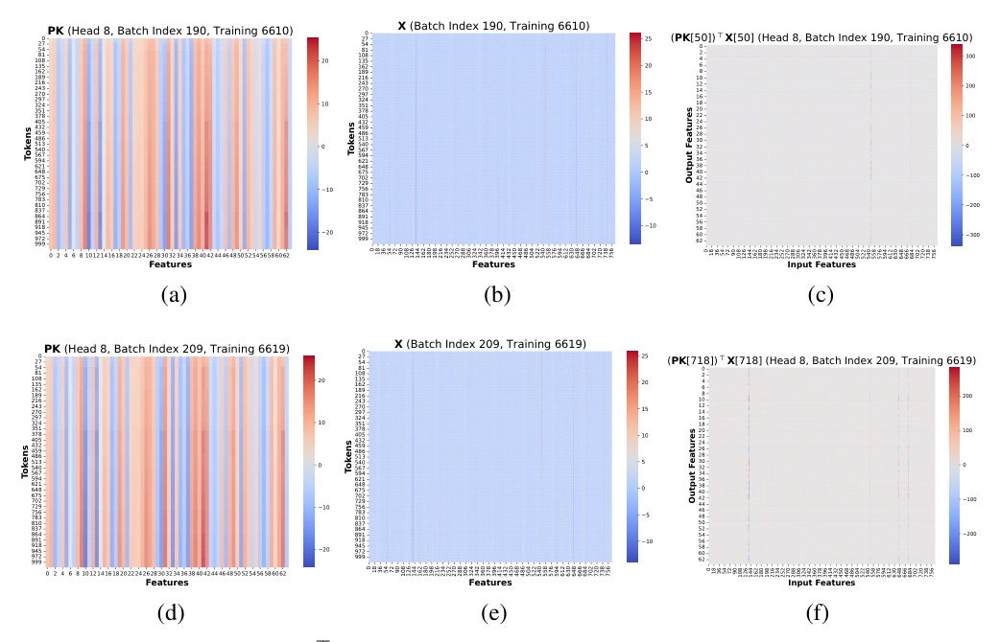
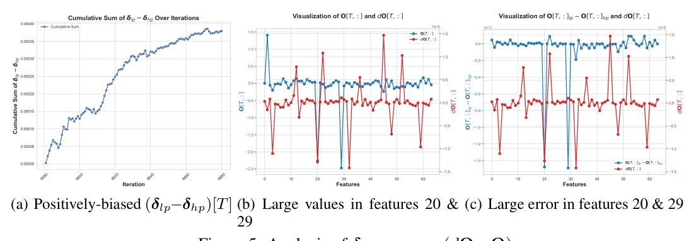

來源：OpenReview forum 0jHyEKHDyx · code: github.com/ucker/why-low-precision-training-fails
BF16 + Flash Attention 的 loss 爆炸不是玄學，是「注意力低秩表示相似性 × BF16 有偏捨入誤差」糾纏成的可定位、可修復數值機制。





惡性循環：低秩表示「相似性」提供累積的方向，BF16 有偏捨入提供累積的動力 —— 兩者缺一不可。
| 介入（intervention） | 結果 | 結論 |
|---|---|---|
| 停用 tiling（block = 全序列） | 仍失敗 | tiling 非元兇 |
| 只 layer 2 用 FA | 重現失敗 | 源在 layer 2 |
| 只 layer 2 換 standard attn | 恢復穩定 | 源在 layer 2 FA |
| 用等價式 δ=rowsum(dP◦P) | 恢復穩定 | δ 計算路徑是關鍵 |
| 只把 O 算 FP32 | 恢復穩定 | BF16 算 O 是直接原因 |
| 只把 Ō=P̄V 算 FP32 | 恢復穩定 | 偏差源在 P̄V product |
低秩相似性提供方向、有偏捨入提供動力 —— 定位它、FP32 驗證它、dynamic-max softmax 修復它。
Eqn.(3) shows that the accumulation of the low-rank error direction R is governed by the scalar term Σ(δlp−δhp)[T]. If this sum is biased towards non-zero values, the error across different training steps will accumulate rather than cancel out... this ultimately corrupts the weight updates, increases the spectral norm and activations, and causes the training failure.
式(3)顯示低秩誤差方向 R 的累積由純量項 Σ(δ_lp−δ_hp)[T] 主宰。若此和偏離零值，跨訓練步的誤差會累積而非抵消……最終腐蝕權重更新、推高 spectral norm 與激活、導致訓練失敗。§3.3.1 Cause 1, p.6
Claim 2. Weight update in low-precision training is biased by (δlp−δhp)[T]R, which arises from the structurally similar matrices (denoted as R) across tokens and training steps, and its positively-biased coefficient (δlp−δhp)[T].
Claim 2：低精度訓練的權重更新被 (δ_lp−δ_hp)[T]R 偏置，源於跨 token / 訓練步的結構相似矩陣 R，及其正偏係數 (δ_lp−δ_hp)[T]。§3.3.1, Claim 2, p.6
When adding two negative numbers, the rounding operation can introduce a consistent bias... Because the operands P̄[T,t]V[t,i] are negative and have a large exponent, the error of rounding up is magnified, resulting a negative error... This systematic negative bias in the computation of Ō is the ultimate source of the training failure.
相加兩個負數時，捨入操作會引入一致的偏差……因運算元 P̄[T,t]V[t,i] 為負且指數大，round-up 的誤差被放大成負誤差……Ō 計算中這個系統性負偏，正是訓練失敗的終極源頭。§3.3.2 Cause 2, p.8
Crucially, this modification is mathematically equivalent to standard attention in exact arithmetic, as it leverages the shift-invariance property of the softmax function (softmax(z) = softmax(z−c)). Our method simply chooses a different row-wise constant c to ensure numerical stability.
關鍵在於：本修改在精確算術下與標準 attention 數學等價，因它利用 softmax 的平移不變性 softmax(z)=softmax(z−c)。我們的方法只是選一個不同的 row-wise 常數 c 來確保數值穩定。§4, p.9
This paper presents the first mechanistic explanation for a notorious loss explosion in low-precision flash attention training. We pinpoint the root cause to an interplay between emergent low-rank representations and biased BF16 rounding errors. Our analytical workflow provides a blueprint for diagnosing similar numerical instabilities in other architectures, scales, and low-precision formats.
本文提出低精度 flash attention 訓練中惡名昭彰 loss 爆炸的首個機制性解釋。我們把根因釘死在「湧現的低秩表示」與「有偏的 BF16 捨入誤差」的交互作用。我們的分析工作流提供了一張藍圖，用於診斷其他架構、規模、低精度格式中類似的數值不穩。§5 Conclusion, p.10
We posit that a root cause of training failure is the structural similarity within the error matrices, (PK)[T]^T X[T]... Techniques like QK normalization and Gated Attention disrupt this underlying structure. In doing so, they ensure that even when rounding errors are present, they lack the coherence to compound.
我們主張訓練失敗的一個根因是誤差矩陣 (PK)[T]^T X[T] 內部的結構相似性……QK normalization 與 Gated Attention 這類技巧打散了此底層結構，從而確保即使存在捨入誤差，也缺乏複合累積所需的同調性。§5 Discussion, p.10
資料來源：arXiv 2510.04212 (ICLR 2026 Oral) · OpenReview 0jHyEKHDyx · github.com/ucker/why-low-precision-training-fails